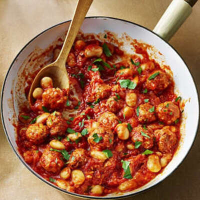

Projects
Recipes
Contact
Nduja Meatballs

This one-pan dinner packs in plenty of protein. Serve with dollops of yogurt and lemon zest.
Serves 4 | Takes 40 mins
Original recipe: Waitrose & partners leaflet, June 2025
main
meat
Ingredients
2 tsp olive oil
1 onion, finely chopped
20 pork 'nduja meatballs (or regular pork)
½ tsp smoked paprika
400g can peeled tomatoes
400g can butter beans, drained and rinsed
½ tsp clear honey
400ml chicken stock
300g wholewheat couscous
12g flatleaf parsley
Method
Heat 1tbsp oil in a large saute pan, or shallow casserole dish over a medium-high heat. Add the onion and meatballs, then fry, stirring regularly, for 8-10 minutes until the onion is soft and the meatballs are golden in places. Add the paprika and stir over the heat for a minute.
Add the tomatoes, breaking up any whole pieces with a wooden spoon. put 200ml water in the tomato can, swirl around to rinse out, then stir it into the pan along with the butter beans and honey. Season and simmer for 10-15 minutes over a medium heat until the sauce has thickened and the meatballs are cooked through with no pink meat. In a separate pan, heat the stock.
Meanwhile, put the couscous in a large bowl. Season with a pinch of salt, then pour in the hot chicken stock. Cover the bowl with a plate and leave to absorb for 6 minutes. Fluff up the couscous with a fork, drizzle with the remaining 1tbsp olive oil, then serve with the meatballs and a scattering of rough chopped parsley.